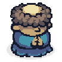

!
🏆 Erfolge
🏆 Stufe 20 erreicht!
Bestenliste
🌟 Endlos weiter
Schliessen
Ja, neu anfangen
Abbrechen
Willkommen, Fremder.
Der Älteste: „Wähle, wer du sein willst — jede Wahl bleibt dein ganzes Leben."
Aufbau & Upgrades
💥
⚡
Weiter
Aus dem Nichts

Weiter
⏭ DEV: Intro skippen + Name TEST
Wähle dein Kürzel
1–4 Buchstaben — so wirst du im Dorf gerufen
Bestätigen